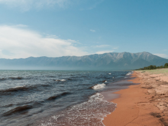
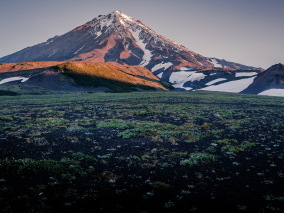
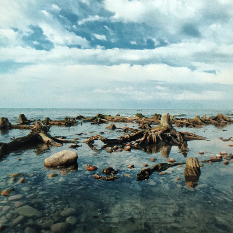
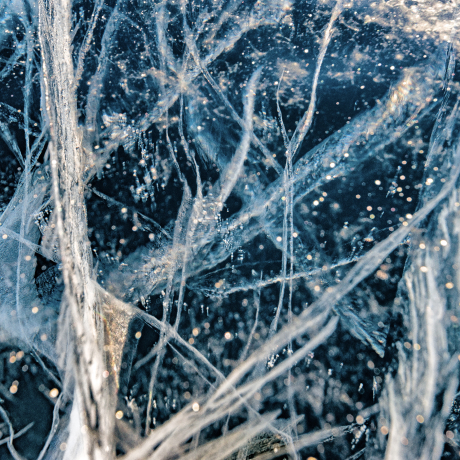

Traveling in Russia
The real country is not in the news, but here.

Your seat is on the top
What haven't we seen yet?
According to VTsIOM polls, 95% of Russians dream of travelling, but only 36% plan to spend holiday in their home country. Like, what have we not seen here at home? In fact, Russia is a whole universe with the gentle sea on he south, dense forests of Saiyan and severe ice of the Putorana plateau. And you can also see all these beauties without millions in the account, an international passport and multi-hour flights. Like, for example, Vera Bashmakova, a brave young mother who took three children in an armful, seated them in her "Lada" and drove 20 thousand kilometers in her native country. We have selected and described some interesting places, worth visiting during your vacation.
- Time Zones 11
- UNESCO natural heritage sites 12
- UNESCO cultural heritage sites 16
- Nature reserves 105
- Airports 241


- 


- 


-
Kurshskaya Spit
URLpark-kosa.ru
Here, between forests and sand dunes, you can see two water horizons - calm Kurshskiy bay on one side and the rippling waves of the Baltic Sea on the other. A unique natural area on the edge of the Russian enclave.
The Kaliningrad region does not end there. The traveler and researcher can find there the westernmost point of Russia, the Baltic Spit, and the German heritage of small seaside cities in the same place. The atmosphere of these places eliminates the fuss, dipping into the tranquility of nature and the smell of steel cool sea.
-
Kolskiy

Almost the whole peninsula is located beyond the Arctic Circle. Saami tundra is located to the north of taiga, and to the south of the Arctic Ocean, pretending to be the Barents Sea.
Perhaps you have watched Zvyagintsev and even heard the history of the Arctic festival in Teriberka. Perhaps the word "Khibiny" can be recalled from school geography lessons. Perhaps you were not interested in the ultra-deep well penetrating the earth's crust, and from apatites you have been covered with apathy. But your dream of seeing the northern lights can come true with a ticket to Murmansk.
-
Altai
URLFacebook

Altai is one of the most beautiful places in Russia. First of all, because of the mountains: if you drive along the ridge, you will see slopes strewn with pine trees, mountain rivers and lakes. And if you open the window of the car, you will admire the invisible miracle of these places - the mountain air.
The climate in Altai is temperate, so it is best to go here in summer. Trus you can see all the variety of local flora and fauna. Moose roam the forests of Altai, eagles fly over the ridges, and roe deer graze on the plains. And the famous manuls are also inhabitants of the Altai territory.
-
Winter Baikal
Everyone knows Baikal as the largest lake in the world. A lot of people also know that this is the largest source of fresh water and one of the most beautiful places in Russia.
Of course, this is all true. But Baikal is still an ideal place for special skiing competitions. This is a sport where a skier ties himself to a motorcycle and the tandem tries to develop as much speed as possible on the ice. In March 2019, a world record was set at the Baikal Mile festival - 197.011 km/h.
-
Karelia

Siberia ends not in the Urals, but in Karelia: the Siberian larch that forms the taiga does not grow west of the Vodlozero. But here it grows up to 30 meters - the forests of the Karelian national parks, due to impenetrable swamps, have never been cut down. Some pines are more than half a million years old. You can touch a living creature that saw the sun before Ivan the Terrible saw it. In the virgin forest you will not find a path for a hundred kilometers. And on rare paths, trees a couple of meters from the ground are marked with bear claws. Let everyone know who's the boss.